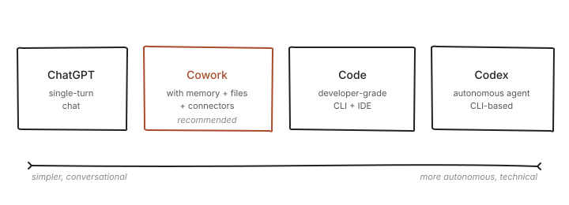
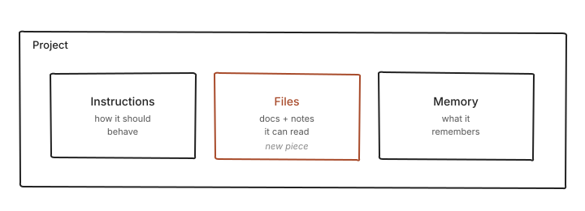
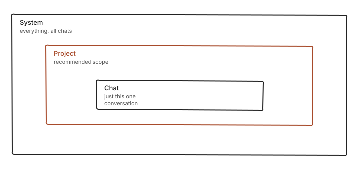
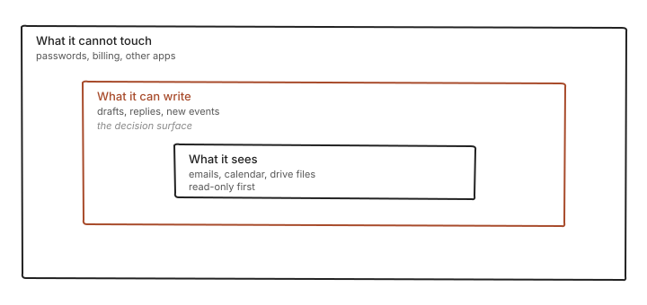
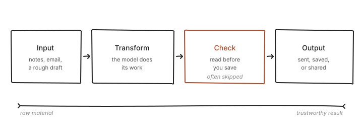
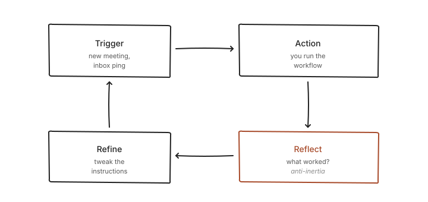

Start here — what Cowork is, why you'd use it
Cowork is ChatGPT with memory, files, and a few connectors. That's the whole shape. If you've tried chatbots and felt the limit — they forget you, they can't open your calendar, they start over every time — this is the version without those limits. Two minutes to understand. Five to set up. Curious how these picks landed? Market mapping and reviewed alternatives are in Research (in the rail).

First draft in chat. Do NOT save, create, move, or edit any file until I review and approve. Give me an overview of what today looks like based on my calendar. Read the events, summarize in one short paragraph, flag any that look back-to-back with no buffer. Don't edit anything — just summarize.
Personal — when you're using Cowork for things that aren't paid work. Cowork holds context (memory, files, connectors) for the slice of life you point it at. Example: a reading project with the book list and notes on what you liked about past reads; ask about a new title and the framing lines up with taste already on record.
Creative — solo output where the work carries a voice and Cowork is the second mind. The memory and files stick around, so the companion doesn't reset between sessions on the same piece. Example: a commonplace book where favourite passages, half-formed notes, and working questions sit in one container; ask for a pattern across the last month and it reads what's already there.
Client — paid work for someone else, where scope and confidentiality matter. Cowork's containers let one client's material stay separate from the next; memory and connectors attach to that container, not to every chat. Example: a one-off consult where the brief, the past calls, and the deliverable spec all live in one place and nothing bleeds across to other work.
Deeper — when to pick Cowork over plain chat or Code. Chat is a text window with no memory between tabs. Code is a developer tool. Cowork sits between them: it remembers across sessions, reads local files, and takes actions through connectors. Example: drafting a document that draws on three source files is Cowork; one-shot questions with no follow-up are chat.
Your first project — where Cowork stops forgetting
A project is where Cowork stops forgetting. Drop a one-page "who I am, what I do" into a project, add any reference files, and every new chat in that project starts with that context. Five minutes to set up. Every conversation after is faster.

First draft in chat. Do NOT save, create, move, or edit any file until I review and approve. Create a project called "intro test" (mentally — don't actually create it). Draft a one-page "who I am, what I do" that a model could use to understand my work. Three short sections: what I make, who it's for, constraints you should know. Keep it under 300 words. Show me the draft.
Personal — a project as a lightweight knowledge silo for one area of your own life. Drop in the relevant files and notes; every chat inside picks up that slice without being re-briefed. Example: a household project with the utilities list, the recurring errands, and a few notes on preferences; ask what's outstanding this week and the answer lines up with the record.
Creative — a project for one piece in progress, carrying voice notes, reference files, and style cues in one container. The project keeps the work's texture in one place instead of scattered across chats. Example: a short essay with three source articles, a rough outline, and a paragraph on tone; ask for a draft section and the voice matches what's been set, not a generic default.
Client — one project per client, so context doesn't cross over. Client A's brief, constraints, and references sit inside their container; nothing from Client B's project is in reach. Example: a proposal for a new engagement where the scope doc, the past call notes, and the deliverable template are all local to that project; drafting a status update pulls from only what belongs.
Deeper — when a project is overkill. If the ask is one-shot and won't come back, plain chat is fine. Projects earn their setup cost when the context will be reused; under that threshold, the ceremony slows you down. Example: rewriting one email in a friendlier tone is chat; drafting emails in that tone every week is a project with the tone rules saved.
Memory — the setting that turns "smart but forgetful" into "remembers"
The model doesn't remember you. It remembers a project, if you give it one. Two minutes to set up. Every follow-up starts with yesterday's context instead of a blank page.

First draft in chat. Do NOT save, create, move, or edit any file until I review and approve. For a hypothetical "test" project, draft what the project memory should contain: 3 bullet points about what the project is for, 3 bullets about preferred style and tone, 2 bullets about constraints. Keep each bullet under 15 words.
Personal — memory for preferences, habits, and recurring contexts in your own life. Once the pattern is recorded, the model stops re-asking and the answers match how you actually live. Example: a personal finance check-in where the accounts, the review cadence, and a preference for short summaries over long ones are stored; the monthly run always comes back in the same readable shape.
Creative — memory for voice, style, and the constraints a piece of work keeps returning to. Once recorded, they apply across every new session without being re-explained each time. Example: a hobby project where the preferred sentence length, the words to avoid, and three example pieces of what good sounds like are stored; drafts come back already calibrated instead of generic.
Client — memory for one client's rules, kept inside that client's project so it doesn't leak into the next. Brand voice, terms to avoid, approval chain, confidentiality notes — all local to the container. Example: a retainer where the style guide and the approved spellings of product names live in project memory; every new draft starts from those rules, not defaults.
Deeper — the three scopes. System memory applies to everything; project memory applies to one container; chat memory lasts one session. Pick the narrowest scope that fits: chat for a one-off, project for recurring work with context, system only for preferences that apply everywhere without exception. Example: "prefer short replies" is system-wide; "this project uses British English" is project-scoped; a one-session framing choice stays in chat.
Connectors + safety — what Cowork reaches into, what it cannot touch
By default, Cowork only sees what's in its own folder. Connectors give it read or write access to Gmail, Drive, Calendar, Notion — one tool at a time, one permission at a time. Five minutes to wire up. What each connector can and can't do stays visible in settings. Nothing is hidden.

Connectors are the moment trust shows up. Once Cowork can read your mail or write to your drive, the setup needs shape. The cleaner pattern: the agent gets its own credentials. Its own email address. Its own password vault. Its own calendar entries if it needs them. Not yours. Scope starts narrow — read-only first. Write access only for surfaces where the read worked and the output looked right for a while. The risk is not abstract. An agent that can send mail as you will, at some point, send something odd to someone important. A well-meaning summary in your voice to the wrong contact is hard to unsend. The useful frame is onboarding a new assistant, not turning on a new feature. Trust is earned per permission, not granted once.
First draft in chat. Do NOT save, create, move, or edit any file until I review and approve. Assume Gmail is connected in read-only mode. Summarize the last 3 days of inbox: how many unread, which senders appear most often, any with a clear action verb in the subject. Give me a one-paragraph summary. Don't reply to anything, don't archive anything, don't draft anything. Just the summary.
Personal — when the agent reaches into a personal tool, give it an address it owns, not yours. Its own login for expense tracking, its own vault, its own narrow read path into the statements — not your everyday account. Scope stays narrow; write access waits until the reads look clean for a stretch. Example: expense tracking where the agent reads last month's charges and flags anything unusual, but cannot move money or change a record.
Creative — connectors in solo creative work usually mean read-only reach into reference material, not the keys to publish anything. The agent sees source files, sees past drafts, sees research clippings — and stops there. Writing back to the public surface stays with the maker. Example: a newsletter where the agent reads an archive of past issues and a file of working notes, pulls a theme for the next one, but never drafts or sends on your account.
Client — connectors in paid work belong to the client's container, not the account. One set of credentials per engagement — a scoped inbox address, a dedicated drive folder, a token that reaches only into their tools. When the engagement ends, the permissions retire with it. Example: a consulting deliverable where the agent reads the brief folder and the past call transcripts from that client only, with no line of sight into another client's project on the same machine.
Deeper — the model has two switches, not one. Read is the easy half: the agent takes in what's there and reports back; mistakes stay in the chat. Write changes the world outside — sends, saves, edits — and mistakes ship. Start every connector read-only; provision write access later, per surface, once the read pattern has held. Provisioning hands over keys. Instructing is what the agent does inside them. Example: a travel itinerary where the agent reads the shared calendar for a week before it ever books a thing.
Real work — Cowork in a client shop and at home
Two people, one tool, different shapes of work. The first video is someone running a client-facing shop with the agent doing operational work across meeting notes, calendar, email, and storage. The second is a parent running homeschool and family operations with a handful of agents, mostly through voice notes. Neither workflow is the right one to copy. Both show what the tool looks like when it's actually load-bearing in a week.

First draft in chat. Do NOT save, create, move, or edit any file until I review and approve. Pick a recurring task you do most weeks — anything that has Input, Transform, Check, Output steps. Describe it to me in 4-5 lines using those step names. Don't suggest automation yet. Don't tell me which step Cowork could handle. Just the shape.
Personal — Cowork as a small life-ops layer for the non-work side. One container holds the recurring tasks, the preferences, and the files those tasks touch, so the same ground rules don't get re-explained every week. The work is unglamorous — most of it is sorting, summarising, reminding. Example: meal planning where the dietary notes, the regular shop, and the rotation of favourite dishes sit in one place, and a weekly plan comes back in the format you'd already asked for.
Creative — Cowork inside a creative piece is scaffolding, not authorship. The tool holds the notes, the references, the rough sketch of structure, the boring bits of tracking — the choices that make the work yours stay with you. A maker who hands over voice is replaceable; a maker who hands over filing is not. Example: a podcast drafting workflow where the agent keeps the episode outlines, the guest notes, and the recurring segment templates in one place, while the tone and edits stay in the maker's hands.
Client — in billable work, Cowork earns its keep only when it shortens the loop between input and a delivered piece. A force-multiplier moves hours of admin into minutes and leaves the thinking untouched. A distraction adds a tool to learn on top of the same work. The test is whether the week was quieter, not busier. Example: preparing for a meeting where the agent gathers the last three call notes, the outstanding actions, and a brief summary into a single page before you sit down.
Deeper — the primitives don't change across shapes of work. Projects, memory, connectors, files. What shifts is the prior: what counts as useful, which errors recover, who reads the output. The test for whether the tool belongs in a week is simple: does removing it make the work harder, or does the work go back to how it ran before. The first means load-bearing. The second means novelty. Example: a rotating practice schedule where the tool holds the cycle; take it out and Monday feels off.
Your first week — how the primer becomes practice
The primer is a shape, not a script. Here's what changes in the first week: the agent starts doing the same small task twice, you notice what worked, you write the principle down once, and the next task inherits it. The question is whether Cowork becomes a tool you opened once or part of how you actually work. That's settled by week two or so, and the lever is mostly one habit — codify once, then keep going.
The first-week habit is smaller than it looks. After a recurring piece of work — a call, a session, a task that keeps coming back — drop a short note into Cowork. Text, a photo, thirty seconds of voice, whichever costs least friction. Don't sit at the laptop for it. A habit that requires sitting down doesn't survive week one. What matters is consistency, not shape. After several rounds, the agent has a feed of raw moments: what ran, what stuck, what missed. That feed is what makes week two onward different — the agent is no longer guessing at context. The habit costs less than the ambition to keep it. That is the point.

First draft in chat. Do NOT save, create, move, or edit any file until I review and approve. Pick one thing you'd normally type or look up that you've done more than twice in the last month. Describe it to me in 3-4 lines: the trigger (what made you do it), the steps you took, and the output you needed. Don't tell me how Cowork could help yet. Just describe the loop. That's the primitive.
Personal — the codify habit in personal use is low stakes and easy to skip. Which is exactly why it matters. After the agent helps with the same errand twice, a one-line note — "always start from this file, ignore the archive" — saves the third and fourth from going sideways. The notes are boring. The compounding is not. Example: a weekly review where two runs in, a sentence about which calendar and which inbox get counted saves every future review from a slightly different shape.
Creative — the thing to write down is the piece, not the mechanics. Notes about which sources count as canon, which words to keep out, which cadence feels right — these are the rules of the work. They apply across tools and across years. Rules about where to click belong with software support, not with the craft. Example: a lesson plan where the pacing, the recurring structure, and the exercises to avoid are written once and inherited by every plan after.
Client — codify once per client, apply forever. The brand voice, the approved terms, the review chain, the things they hate — all live inside that client's container and load automatically whenever work in that container starts. New hire on the client's side, new agent on yours — the rules don't re-negotiate. Example: an inventory for an ongoing engagement, where the column names, the update cadence, and the contacts who sign off are written down once, and every subsequent pass starts from the same shape.
Deeper — clever prompting ages out. Writing down the principle does not. A sharp prompt solves the current task with the current model; the principle that sits behind it keeps solving tasks after the model changes, after the tool changes, after the team changes. The durable asset is the note, not the technique. Example: a weekly metric where the definition, the source, and what counts as a clean reading are written once in plain sentences, and every future report reads from the same definition.
Primer's done. What you do next is yours. If this page is still up in a few weeks, that's a bug — copy what you want before then.
If you want the reasoning behind the six stops, the tool-landscape notes, and the market map: Research (below).
Research · how these picks landed
This appendix is for the curious reader. It maps the tool landscape, names a few other voices teaching in this space, and explains why the primer stops where it stops.
Tool landscape
Four names come up often. Cowork, Code, Codex, and Gemini. Each sits in a different spot on the spectrum from "chat with memory" to "developer assistant running in a terminal". Describing the shape is more useful than ranking them.
Cowork is a chat product. You type. It remembers. It reads files you upload. It can reach into a short list of connected tools — a calendar, a drive, a mailbox — when you allow it. The interface is a conversation, and the work happens inside that conversation. For someone who has only used chatbots, this is the smallest step up. Two minutes to understand, five to set up.
Code is the same model family, but the workspace is different. It lives in a code editor or a terminal. It reads and writes files in a project folder. It runs commands. The audience is someone who already edits code and wants an assistant that can touch the repo. The interface assumes a developer loop.
Codex is the terminal-native one. Command line first. It is built for people who keep a shell open all day and want an agent inside it. The learning curve is the shell, not the model.
Gemini is a parallel product from a different vendor, with its own chat surface and its own app integrations. The shape is close to Cowork's — chat with memory and files — but the connected tools, the mobile app, and the pricing tier differ. Worth knowing exists. Not the entry point for this primer.
Teaching voices
A short list of other voices teaching in this space. Notes describe the shape of their output, not a verdict on it. A reader who wants to compare notes — see the same idea explained differently, or find someone aimed at a different audience — can start with any of these.
- Ruben Hassid — How to AI Substack. The clearest non-technical Cowork curriculum online. He named the prompts → projects → skills progression that this primer borrows for its shape. A good second voice if someone wants more at a similar pace.
- Jeff Su. Productivity and workflow videos. Stop 1's intro video is one of his. Low-fluff, high-signal. If Stop 1's rhythm worked, there is more like it on his channel.
- Jesse Genet. A non-technical parent running AI at home. Already featured in Stops 5 and 6. Her habits — voice-first dictation, a confetti time-limit, Obsidian notes — transfer to most readers' lives without modification.
One observation about the shape of the field. The material splits along two axes. One axis is the tool being taught — chat surface, code surface, agent surface. The other is the audience — general reader, creator, builder, practitioner. Each voice above picks a pair of those and stays with it. The primer does the same. Cowork as the tool. A general reader with no programming assumed as the audience.
A second observation. None of the voices above is a vendor of the tool they teach. The incentives are different from a vendor channel — less sales pressure, more idiosyncrasy. The trade-off is that older material goes out of date quickly when the vendor ships something new.
Why these six stops?
Each stop answers a question the previous one raised. What is this. How do I set it up. How do I ask it for something useful. How does it remember me. How do I plug it into a tool I already use. What does real work with it look like. The sequence is the smallest path from nothing to a running workflow.
A few stops were considered and dropped. An advanced-prompting stop was cut because the basics covered in Stop 3 carry most of the weight, and the rest is taste. A price-and-model comparison stop was cut because the numbers change every quarter and a snapshot would be wrong by the time anyone read it. A "deploying agents" stop was cut because it sits a level above this primer — the reader who wants it will know where to look. Six stops is already close to the ceiling for one sitting. Cutting further would leave the primer incomplete on its own terms.